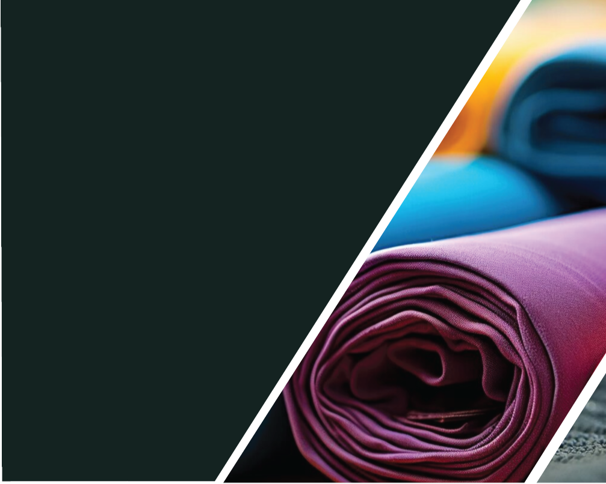
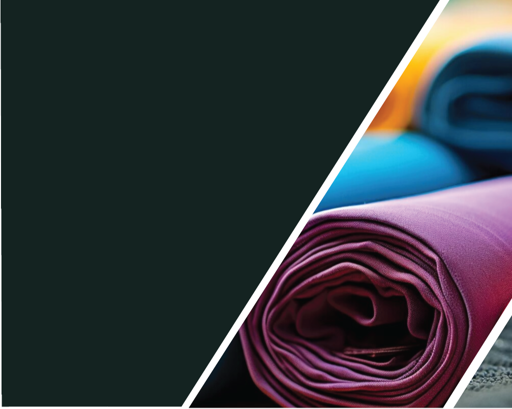
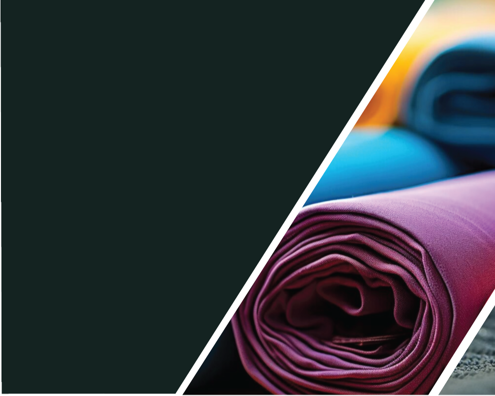

 

ABOUT US
WHO WE ARE
Eco Threads Textiles Kenya EPZ Limited is agarment manufacturer situated in Naivasha,Kenya. Known for our commitment to ethicalpractices and highstandard infrastructureand technology, our manufacturing facility isa perfect blend of cuttingedge innovationand an appreciation for ethical garment production. We are known for being adaptable as we tailor our services to meet the diverseneeds of our customers, engaging in a widespectrum of projects with flexibility and dedication. With a customercentric philosophyand collaborative spirit, we work closely withclients to understand their vision, goals, andunique requirements, defining our approachand setting us apart in the garment manufacturing industry.
MISSION
Our mission is to provide garment solutionsto our clients, using sustainable and ethicalgarment manufacturing practices. We arecommitted to create a future whereinnovation, technology and responsibilityintersect, setting new benchmarks forsustainable production. Through ouradaptability and customercentricapproach, we strive to empower our clientswith versatile solutions tailored to theirunique needs, fostering collaboration andbringing forth garments that not only meetbut exceed ethical and quality standards.
WORK ETHICS
Our commitment to work ethics at EcoThreads Textiles Kenya EPZ Ltd, weprioritize the fair treatment of everyindividual within our organization. Webelieve that fostering an environment offairness is integral to the wellbeing andsuccess of our team members. To ensure this, we go beyond just competitivesalaries; we strive to provide a workplacewhere everyone is valued, acknowledged,and compensated fairly for their contributions. Our dedication extends tomaintaining regular work schedules thatpromote worklife balance, recognizing theimportance of both professional andpersonal aspects of our employees' lives.Moreover, we take pride in equipping ourteam with the necessary gear and tools,creating a safe and conducive workingenvironment that enhances productivityand overall job satisfaction. By upholding these principles, we cultivate a workculture at Eco Threads that is not onlyethically sound but also promotes theholistic growth and wellbeing of ourvalued team members.